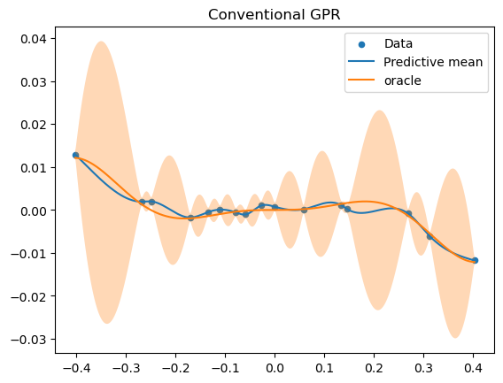

Load packages
using Pkg
Pkg.activate(".")
Pkg.Registry.add(RegistrySpec(url = "https://github.com/RoyCCWang/RWPublicJuliaRegistry")) # where MaternRegression.jl is registered.
let
pkgs = ["RKHSRegularization", "StaticArrays", "MaternRegression", "PythonPlot",
]
for pkg in pkgs
#check if package is in current environment.
if Base.find_package(pkg) === nothing
#install package.
Pkg.add(pkg)
end
end
end
import Random
Random.seed!(25)
using LinearAlgebra
using Statistics
import RKHSRegularization as RK
import MaternRegression as GS;
include("helpers/gpr.jl")
include("helpers/utils.jl"); Activating project at `~/Documents/repo/MaternRegression.jl/examples`
Cloning registry from "https://github.com/RoyCCWang/RWPublicJuliaRegistry"
Registry `RWPublicJuliaRegistry` already exists in `~/.julia/registries/RWPublicJuliaRegistry`.
Reset plot figures.
import PythonPlot as PLT
PLT.close("all")
fig_num = 1; CondaPkg Found dependencies: /home/roy/.julia/packages/PythonCall/bb3ax/CondaPkg.toml
CondaPkg Found dependencies: /home/roy/.julia/packages/PythonPlot/KcWMF/CondaPkg.toml
CondaPkg Dependencies already up to date
Specify floating-point data type.
T = Float64;Oracle model set up
Specify the Matern 3/2 covariance function hyperparameters.
λ = convert(T, 1.23)
b = convert(T, 5.6)
q_Matern32 = 4*b*λ^3
θ = RK.Matern3Halfs(λ, b);Specify observation variance. Set this to a very small number like 1e-12 for a noise-less regression.
σ² = convert(T, 1e-6);Set up oracle, f.
N_on_grid = 7
N_randomly_generated = 9
ub = abs(randn(T))
lb = -ub
ts = generate_almost_grid(N_on_grid, N_randomly_generated, lb, ub)
f = xx->sinc(4*xx)*xx^3
y = collect(
f(t) + randn(T) * sqrt(σ²)
for t in ts
);Query
Nq = 1000
tqs = LinRange(lb, ub, Nq);Oracle query.
f_xq = f.(tqs);Fit and query the GPR via RHKSRegularization.jl, which uses a conventional implementation without Bayesian filtering.
mqs, vqs, η = querygpr(θ, tqs, ts, y, σ²) #predictive mean, prod. variance, GPR model container.
sqs = sqrt.(vqs); #preditive standard deviationVisualize the oracle and (conventional implementation) GPR query results
PLT.figure(fig_num)
fig_num += 1
PLT.scatter(ts, y, s = 20, label = "Data")
PLT.plot(tqs, mqs, label = "Predictive mean")
PLT.plot(tqs, f_xq, label = "oracle")
PLT.fill_between(tqs, mqs - sqs, mqs + sqs, alpha = 0.3)
PLT.title("Conventional GPR")
PLT.legend()
PLT.show() #Not needed if running from a Julia REPL.
PLT.gcf() #Required for Literate.jl
Query Comparison
Conventional implementation of univariate Matern 3/2 GPRs for in-fill problems compared against the stochastic differential equation (SDE) / Bayesian filtering implementation: Set the query positions to be a uniformly spaced grid of Nq samples.
Nq = 5_000
tqs = LinRange(lb, ub, Nq);Conventional GPR.
θ = RK.Matern3Halfs(λ, b) #covariance function variable from `RKHSRegularization.jl`.
mqs, vqs, η = querygpr(θ, tqs, ts, y, σ²);SDE GPR.
θ_sde = GS.create_Matern3HalfsKernel(λ, b) #covariance function variable.
sde_gp = GS.create_sdegp(θ_sde, ts, y, σ²) #cache phase.
mqs2, vqs2 = GS.query_sdegp(T, sde_gp, tqs, ts); #query phase.Relative discrepancy
@show norm(mqs - mqs2)/norm(mqs2)
@show norm(vqs - vqs2)/norm(vqs2)7.031627432571349e-12Marginal likelihood: conventional GPR implementation:
ML_gpr = evalnlli_gpr(η, y)90.39341339598067Marginal likelihood: SDE/Bayesian filtering implementation:
θ_dummy = GS.create_Matern3HalfsKernel(T)
ML_buffer = GS.setup_ml(θ_dummy, ts, y)
ML_sde = GS.eval_ml!(ML_buffer, θ_sde, ts, y, σ²)90.39341339607462This page was generated using Literate.jl.